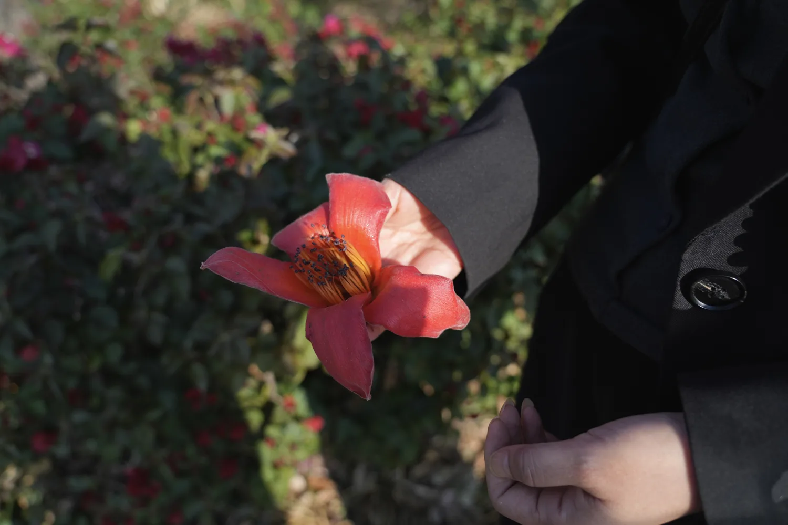
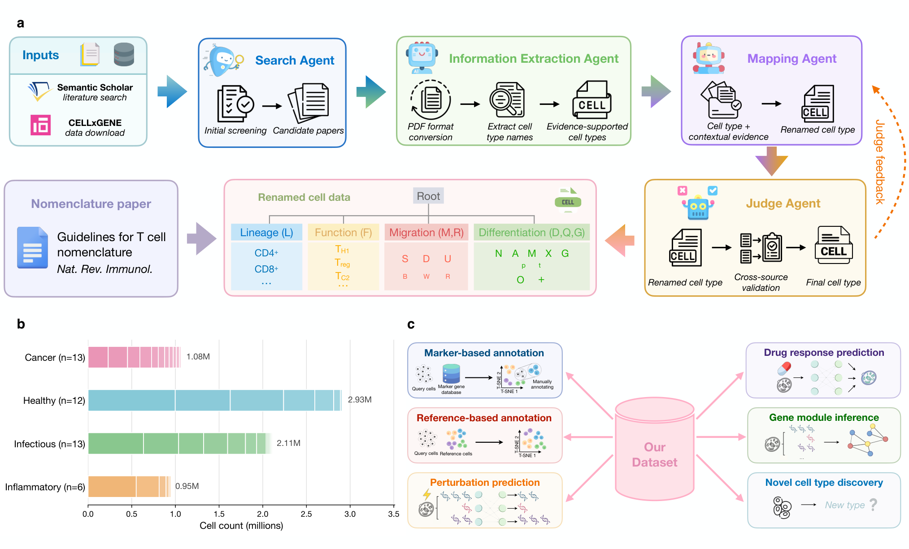

May 2026 – Sep 2026
University of Illinois Urbana-Champaign
Research Collaborator · PLAN Lab
Embodied AI and 3D vision research
Hello, I’m
MPhil Student in Artificial Intelligence
The Chinese University of Hong Kong, Shenzhen
Embodied AIRobot Learning3D Vision


A slow point-cloud loop connects a camera, Zhilin Ou’s photograph of a red kapok flower, a flower illustration, and Baymax gently examining the flower. The flower geometry is an illustration rather than a reconstruction of the photograph.
I am an MPhil student in Artificial Intelligence at The Chinese University of Hong Kong, Shenzhen, advised by Prof. Wenjing Ma. My research interests lie in embodied AI, robot learning, and 3D vision. Through this work, I hope to build robots that learn from experience, adapt to new situations, and support people with care.
I received my B.Eng. in Digital Media Technology from Dalian University of Technology, where I conducted research with Prof. Zhihui Wang on computer vision and multimodal learning. I have also collaborated with the PLAN Lab at UIUC on embodied AI and 3D vision research.

May 2026 – Sep 2026
Research Collaborator · PLAN Lab
Embodied AI and 3D vision research
Nov 2025 – Jun 2026
Research Assistant · SSDUT-AI4SE Lab
Computer vision and multimodal learning
2026–2028
MPhil in Artificial Intelligence
2022–2026
B.Eng. in Digital Media Technology